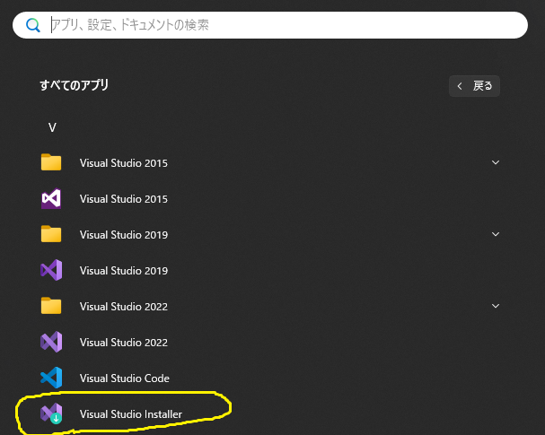
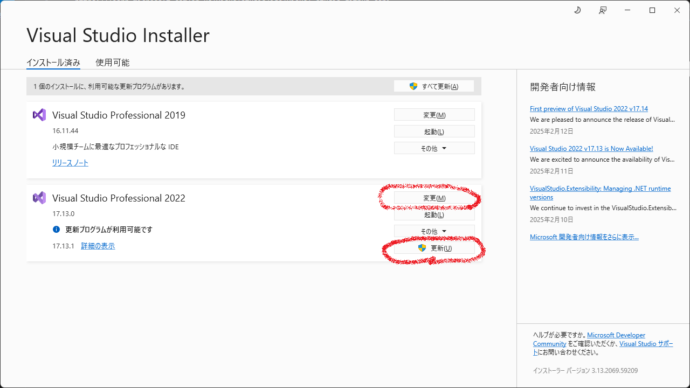
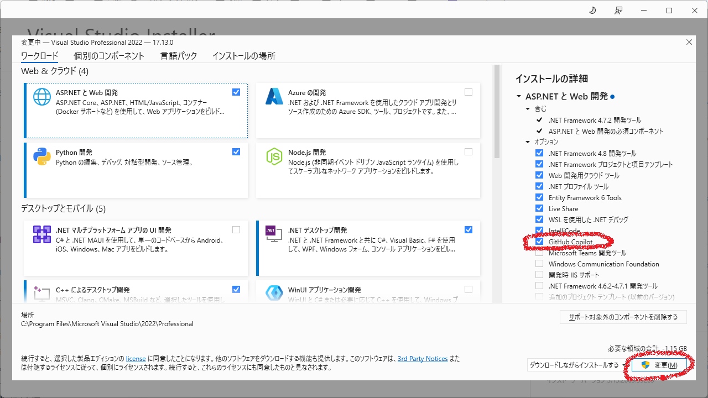
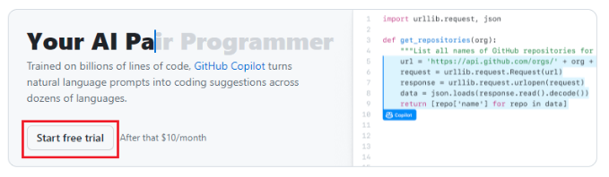
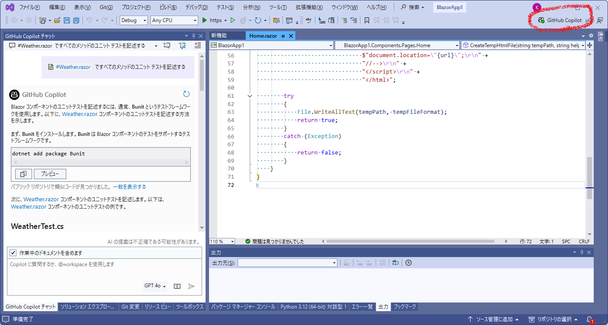
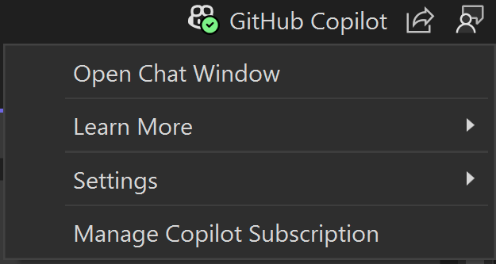
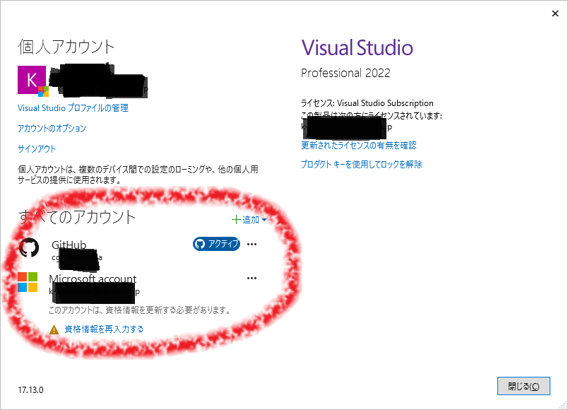
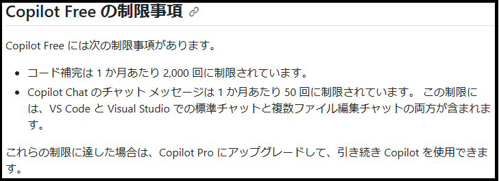
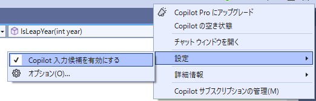
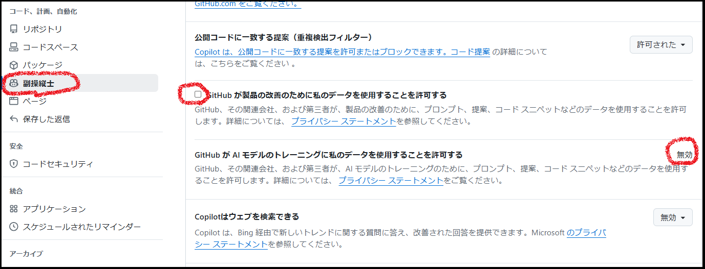

下記リンクに沿って行えば導入はできますが、下記に画像を残しました
https://learn.microsoft.com/en-us/visualstudio/ide/visual-studio-github-copilot-install-and-states?view=vs-2022#install-using-the-visual-studio-installer
Installerを起動します

更新を押して最新にします
変更を押します

Github CopilotをONにします
(例はASP.NETとWeb開発)
変更を押します

Githubアカウントが必要なので登録します（割愛）
https://github.com/
GithubにログインしてStart free trialボタンを押します

Visual Studioを起動します
右上のGithub Copilotボタンを押します

ログインします（どれを押したか覚えてないです。。。）

ヘルプ－Visual Studioの登録を押すと（ただの確認なので押さなくていい）アカウントが２つ入っていました
(なんか視覚情報を更新してと出てますが。。。)

使ってみます
複雑なコードもレスポンスよく実行できるのか気になるところです
制限事項
残念ながら使用制限があります、１か月持つならありですかね。。。
https://docs.github.com/ja/copilot/managing-copilot/managing-copilot-as-an-individual-subscriber/about-github-copilot-free

入力候補がじゃまくさいと感じる時は入力候補を有効にするをOFFにします。。。
その下のオプションで色々変えれるようです

セキュリティ
会社のソースコードとなるとセキュリティが気になるかと思います
下記に調べた方がいらっしゃいました
https://zenn.dev/miyajan/scraps/3567cee380280c
取り合えず、githubのサイトの下記がデフォルトONなのでOFFにします
そうすると自分のコードが GitHub Copilot の改善に使われることはないらしい

「そもそもコードサジェストのために情報を送信する必要がある」とも書いてあります
Codeium
Codeiumは完全無料のようです
ダウンロード
https://marketplace.visualstudio.com/items?itemName=Codeium.CodeiumVS
インストール
https://codeium.com/visual_studio_tutorial
使い方
https://codeium.com/blog/codeium-copilot-alternative-in-visual-studio-sublime-eclipse